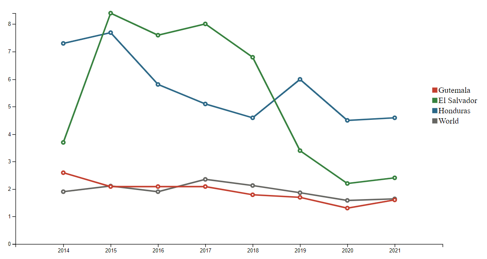

The Northern Triangle countries - Guatemala, Honduras and El Salvador - account for the greatest percentage of unaccompanied children arriving at the US border.
This was as high as 17 - 26 & of all migrants encountered in 2022.
BUT WHY
?
Why are thousands of children from these countries along with their families forced to leave their homelands and undertake such perilious journeys?
Of the many reasons why migrants choose to escape their home countries, lack of resources, food insecurity, and threats of violence are the most important factors
Household items that Maria's family has
Colored items are household items that Maria' family has in posession. Hover over the icon to explore!
Lethal violence against girls and women in the Northern Triangle

Decision to Migrate
Maria decides to migrate in hope of a better opportunity & living condition